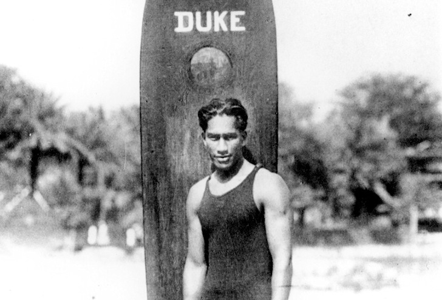
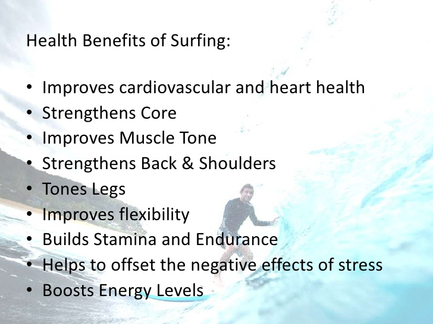

Surfing is a world famous sport that is most popular at warm water beaches like those found in the U.S. states of Hawaii and California, and countries such as Australia and French Polynesia. Wherever waves break, surfers will ride them. Surfing has been around since the 15th century, and the earliest records of surfing were documented in Tahiti and Hawaii by british settlers. There are two main types of surfing, longboarding and shortboarding.
Shortboards are usually 4-7 feet long and are mostly used to ride bigger waves ranging from 3-20 feet. Shortboards were invented in the 1960’s thanks to fiberglass that was invented in the 1930’s. Short boards can perform greater maneuvers such as “Cutbacks” which is when a surfer turns and then forces the surfer back toward the breaking wave. A difficult “off the lip” turns take the surfer off the crest of the wave completely, into the air. Expert surfers can turn in mid-air. Shortboards need more power from the wave to be able to get into the wave and to perform tricks.
The concept of surfing may be simple, but the practice is not. Surfers paddle or are towed into the surf line, or the area of open water where waves break. There, they sit on their boards and watch waves roll in to shore. When surfers see a wave they can ride, they paddle quickly to catch the rising wave. Just as the wave breaks, the surfers quickly jump from their stomachs to their feet, crouching on their boards. Surfers must be aware of their physical skills as well as the environment. All surfers must be aware of weather patterns and surface features of the shore. They must be strong swimmers and to be able to hold their breath for a period of time. Surfers must also have an excellent sense of balance and be able to quickly react to changes in the environment. Surfing remained a hobby more than a sport until Olympic athlete Duke Kahanamoku popularized it in the early 1900s. The US- missionary’s almost erased surfing in the hawaiian islands and only a few hawaiian locals would hit the surf, but Duke made surfing popular by encouraging others with his aloha and enthusiastic spirit.
Surfing is actually a terrific exercise if you are looking for aerobic and anaerobic benefits. Surfing is beneficial because it keeps your heart rate up, keeps your breathing heavy and forces your body to deliver oxygen to your muscles. From standing up on your board by forcing your body upwards to using your arms, back, and neck muscles to paddle and catch a wave, you are putting a lot of stress on your muscles and forcing them to work harder than usual. This can help you strengthen everything from your abdominal muscles to your calf muscles when you surf. So overall surfing is is an enjoyable sport and exercise, for anyone at any age.
